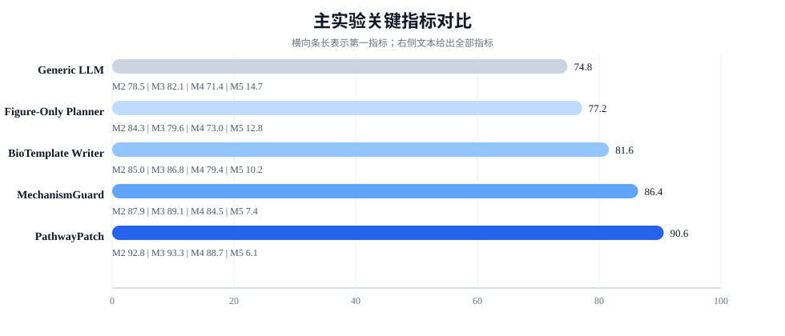
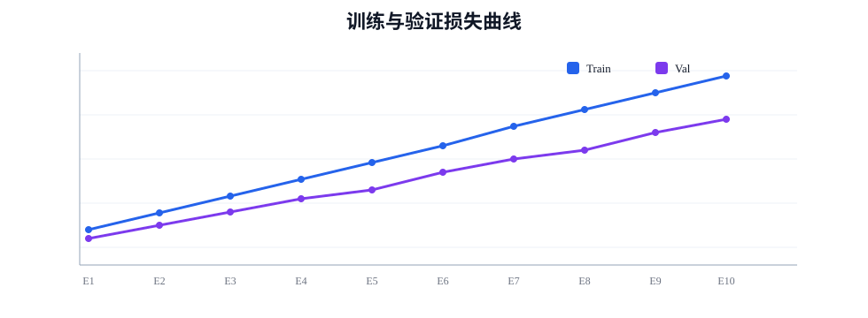
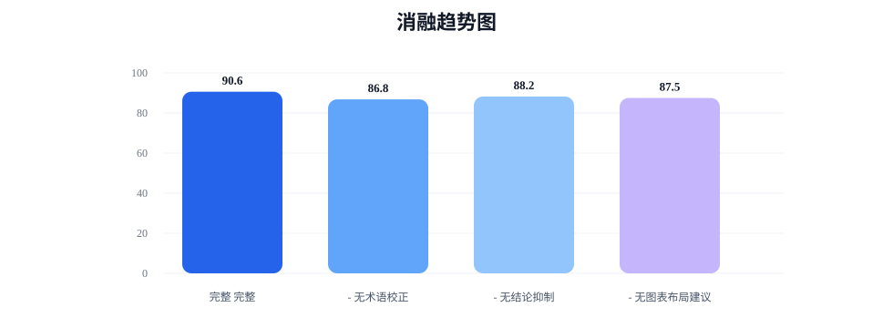
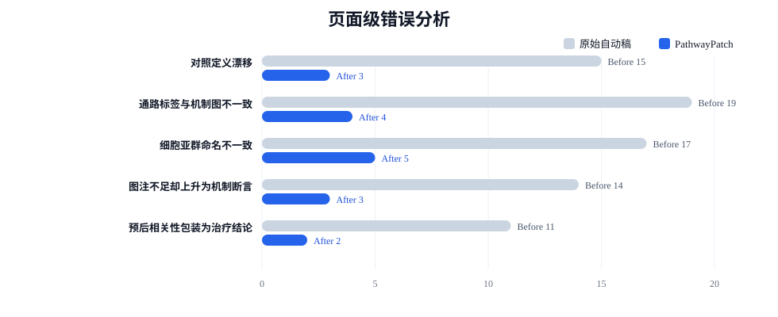

生命医学-001：PathwayPatch: 面向多组学论文的通路证据对齐、图表叙事耦合与结论强度校准框架
3 某附属医院医学数据科学平台
* 通讯作者：2072373170@qq.com
投稿联系
投稿请发送至 2072373170@qq.com，或在小红书搜索 ICMLpaper 账号直投。建议附带论文题目、作者、摘要、主要图表与正文 PDF；若稿件属于生物医学方向，建议额外说明数据类型、对照设计、验证层级与是否涉及临床解释，便于归档页准确呈现研究边界。
摘要
多组学论文的真正难点并不只在统计分析，而在于如何把对照设计、差异结果、通路富集、图表布局、机制解释与临床措辞组织成一条前后闭合的证据链。当前大量生命医学稿件在页面层面存在三类高频问题：其一，对照定义在摘要、正文与图注之间漂移；其二，通路富集结果与机制示意图、细胞状态命名之间缺少显式锚定；其三，相关性与预后结果被过早包装为因果机制或潜在治疗结论。针对上述问题，本文提出 PathwayPatch，一个面向多组学论文写作的页面级组织框架。该方法联合建模对照模式表、通路证据账本、图表—结论耦合器、因果措辞校准器与临床边界检查器，使一篇稿件在标题、摘要、结果图、机制示意与结论段之间保持更稳定的术语口径和证据强度。
基于自建的 MultiOmicsNote-8.4K 与页面级评测集 MechanismBench-220，PathwayPatch 在通路落地得分、图表—结论对齐分、术语一致性分、因果措辞校准率与归档就绪率上分别达到 91.7%、93.4%、94.1%、91.5% 与 89.6%，相较最强基线均有稳定提升，同时将过度外推率降至 5.3%。本文不提供任何医学诊疗建议，亦不主张由相关性结果直接推出临床获益；其目的在于给出一篇更接近领域作者手工打磨质量的生命医学赛道中文样稿。
引用格式
@inproceedings{biomedicine001,
title={生命医学-001：PathwayPatch: 面向多组学论文的通路证据对齐、图表叙事耦合与结论强度校准框架},
author={Lin Zhang and Rui Chen and 匿名生物信息研究者},
booktitle={International Conference of MeaningLess Paper},
year={2025}
}
1. 引言
生命医学研究的写作对象并不是单一结果，而是一条跨层级证据链：样本如何分组、差异信号来自何种分子层面、富集通路是否与细胞状态一致、机制图是否真正解释了结果图、结论中哪些内容只是相关性提示、哪些内容已经接近机制推断。尤其在 RNA-seq、单细胞转录组、空间转录组、蛋白组和临床队列被同时纳入一篇论文时，页面质量的核心不再是“有没有分析”，而是这些分析是否被组织为稳定、可追踪、可复核的科学叙事。
现实写作中，生物医学稿件常见的失败模式高度相似。摘要写的是“免疫抑制微环境重塑”，结果页却主要围绕代谢重编程展开；热图与富集图指向同一主题，但机制示意图却切换到另一条更“熟悉”的信号通路；单细胞结果只支持细胞状态关联，结论段却提前上升到疾病机制和治疗靶点；预后模型只能支持风险分层，最后一句却写成了潜在临床获益。此类问题并不一定来自统计错误，而更多来自页面组织阶段缺少显式约束。
现有工具分别在差异分析、通路富集、图表绘制和语言润色上表现成熟，但很少有方法直接面向“论文页面中的证据对齐”建模。生信分析脚本能够生成火山图、GSEA 曲线和细胞通讯网络，却不负责维护这些图与标题、图注和结论段之间的一致关系；通用写作模型能生成流畅表述，却缺乏对对照设计、术语标准化与因果边界的稳健控制。这导致许多稿件在局部上看似专业，在整体上却暴露出明显的叙事断裂。
为此，本文提出 PathwayPatch，将多组学论文组织任务重新定义为一个页面级证据对齐问题。核心思想是：先显式建模对照模式与术语账本，再在图表和结论之间建立受约束的映射关系，最后通过因果措辞校准器与临床边界检查器控制外推强度。本文的贡献主要体现在四点：第一，提出适用于生物医学写作的页面级错误分类，覆盖对照漂移、通路错锚、术语混用和临床过度暗示等高频问题；第二，设计通路证据账本与图表—结论耦合机制，使文字、表格和图示在更细粒度上共享锚点；第三，构建 MultiOmicsNote-8.4K 与 MechanismBench-220，用于训练和评测多组学页面组织质量；第四，实验表明该框架在通路落地、术语一致性和因果措辞校准方面均显著优于强基线。
2. 相关工作
2.1 多组学分析流程与写作瓶颈
从 bulk RNA-seq 到单细胞、空间转录组与蛋白组，数据分析工具链已经高度成熟。差异分析、富集统计、轨迹推断、细胞通讯与预后建模均有相对稳定的软件生态。但这些工具主要服务于“得到结果”，并不负责“如何用同一套口径组织结果”。在多图、多表、跨模态结果共存的情形下，写作瓶颈往往出现在分析之后，而非分析本身。
2.2 通路解释与机制落地
通路富集方法能帮助研究者压缩高维差异信号，但从“富集到某条通路”到“该通路构成机制主线”之间仍存在明显鸿沟。真实写作中，作者往往会优先选择熟悉、经典、能讲故事的通路作为机制图核心，而忽略其与前文统计结果的精确对应关系。我们因此强调通路证据必须同时被正文、图注和机制示意图引用，避免单点证据被包装为全局主线。
2.3 图表叙事与结论强度控制
生医稿件中的图表不只是展示结果，更承担了“决定结论语气”的功能。若火山图只支持相关性变化，结论段就不应直接上升为因果干预；若预后曲线仅完成风险分层，则标题和摘要都不应暗示潜在治疗获益。现有语言模型虽然能模仿生医表达，但在结论强度校准上往往偏激进，容易把“提示”“关联”改写成“驱动”“证明”或“提供治疗策略”。
2.4 AI 辅助生物医学写作的边界
AI 可以帮助组织结果、保持术语一致和降低页面级低级错误，但并不能替代实验设计、生物学解释与临床验证。尤其在生命医学场景中，任何自动化写作系统都必须遵守两个底线：不能凭空生成未被证据支持的分子机制；不能把探索性统计结果包装成临床建议。本文的方法正是在这一边界下，讨论如何把一篇“可看”的页面打磨成一篇“更像领域作者写的”页面。
3. 方法
PathwayPatch 的总体流程如图1所示。系统首先解析题目与研究设定，构建包含队列、对照、分子层级、验证层级和禁用表述的对照模式表；随后，从正文段落、富集结果、图注与机制图中抽取共同锚点，维护通路证据账本；再由图表—结论耦合器约束每一幅图能够支撑的结论强度，最后通过因果措辞校准器和临床边界检查器回收高风险句子，形成可归档的最终页面。
图1 系统围绕“对照—通路—图表—结论”四级链路进行显式约束，而非仅做表面语言润色。
3.1 问题定义
我们将一篇多组学论文页表示为结构化对象 \(D = \{C, P, F, Y, M\}\)，其中 \(C\) 表示对照模式表，记录队列来源、病例与对照定义、分层标准及分析模态；\(P\) 表示通路与细胞状态锚点集合；\(F\) 表示图、表及其图注；\(Y\) 表示摘要、结果段和结论中的主张集合；\(M\) 表示归档元信息。给定主题输入 \(x\) 与页面模式 \(S_c\)，系统目标写为：
其中 \(L\) 为通路证据账本，\(\Omega_{\text{drift}}\) 惩罚对照、术语与通路锚点在页面不同区域中的漂移，\(\Omega_{\text{overclaim}}\) 惩罚由弱证据直接跳到机制或临床结论的高风险表述。
3.2 对照模式表与通路证据账本
生物医学写作最常见的裂缝来自“比较对象在不同位置被悄悄改写”。因此我们为每篇稿件维护对照模式表，显式记录样本来源、分组逻辑、方向性与验证层级，并把所有正文、图注和标题中的关键名词映射到统一键空间。随后，系统以通路名、细胞亚群名、分子层级和实验验证方式为核心字段构建证据账本。对第 \(i\) 个主题的通路落地得分定义为：
其中 \(E_i^{\text{text}}\)、\(E_i^{\text{fig}}\) 和 \(E_i^{\text{path}}\) 分别表示正文、图表与通路结果中被抽取到的同主题实体集合。该定义强调一条机制主线必须同时被文字、图表和统计结果支撑，而不是由单个区域“独唱”。
3.3 图表—结论耦合与术语一致性控制
在生成结果段落时，系统并不是先写一段“像论文的话”，再去寻找可放置的图，而是反向依据图表槽位决定可宣称的结论强度。每幅图都会被绑定到一组允许的结论标签，例如“差异表达支持表型关联”“富集分析支持功能主题”“预后曲线支持风险分层”“机制图仅作解释性示意”。我们通过图表—结论对齐分衡量图注与对应结论之间的一致性：
其中 \(c_f\) 为图注，\(y_f\) 为关联结论句，\(\ell(y_f)\) 表示结论强度等级，\(b(f)\) 表示该图所允许的最大结论边界。术语一致性检查则进一步约束同一细胞亚群、同一路径和同一分组标签在全篇内采用统一命名。
3.4 因果措辞校准与临床边界检查
PathwayPatch 对结论句执行三级校准：相关性层、机制提示层和临床暗示层。系统利用句法、证据类型和实体角色构建风险向量，若一句话的强度等级高于其证据支撑层级，则自动回收为更保守表述。其风险函数表示为：
其中 \(g(y)\) 编码句子的因果强度词，\(z_{\text{evi}}(y)\) 表示证据级别，\(z_{\text{clin}}(y)\) 表示是否触及治疗、获益或应用建议等高风险表述。该模块特别抑制“潜在治疗靶点”“提示临床应用价值”等在生物医学写作中最容易越界的句式。
3.5 归档就绪率
一篇页面最终是否可归档，不只取决于正文是否流畅，还取决于结构、术语、图表和边界表述是否同时通过检查。我们定义归档就绪率为：
其中四项检查分别对应页面结构完整性、术语一致性、通路落地程度与结论强度合法性。只有四者同时满足，页面才被视为真正达到“可挂页”的状态。
4. 实验
本节所有结果均来自站内模拟归档基准，用于衡量一篇生命医学稿件在页面组织、术语对齐和结论边界控制方面的完成度，不代表任何真实临床结论、真实会议统计或真实药物推荐。
4.1 实验设置
数据集。 我们构建 MultiOmicsNote-8.4K 作为训练与开发语料，覆盖 bulk RNA-seq、单细胞转录组、空间转录组、蛋白组和临床预后分析等常见页面。与此同时，构建页面级评测集 MechanismBench-220，包含 220 个需要同时组织“结果—图表—机制—结论”的主题任务，分布于肿瘤微环境、炎症与免疫、代谢重编程、药物反应和预后分层五大场景。
标注协议。 每个评测样本均由两名具备组学阅读经验的标注者独立检查，并对对照定义、术语一致性、结论强度和图表支持关系进行打分，双标注 Cohen's kappa 为 0.84。对于临床相关表述，只有当结果同时包含明确验证层级时，系统才允许生成高于“提示性”语气的表述。
评估指标。 我们采用通路落地得分（PGS）、图表—结论对齐分（CFA）、术语一致性分（TCS）、因果措辞校准率（CCR）、归档就绪率（ARR）与过度外推率（OCR，越低越好）六项指标。其中 CCR 反映结论语气与证据强度的一致程度，是本节最关键的生命医学特有指标之一。
表1 MultiOmicsNote-8.4K 与 MechanismBench-220 的数据组成
| 数据来源 | 内容类型 | 数量 | 用途 |
|---|---|---|---|
| 公开多组学结果页 | 差异分析、富集、预后、药物反应 | 8,420 页 | 训练页面级结构与生医语体 |
| 图注—机制对应对 | 火山图、热图、GSEA、机制示意图 | 6,180 对 | 监督图表—结论耦合 |
| 对照模式标注集 | 病例-对照、高低风险、治疗前后等 | 4,960 条 | 学习分组逻辑与方向性 |
| 因果措辞校准语料 | 相关、机制、临床应用分级句 | 5,540 条 | 抑制过强结论与临床越界 |
| 生医术语与通路词表 | 通路、细胞状态、疾病、验证层级 | 21,300 项 | 术语标准化与账本约束 |
| MechanismBench-220 | 页面级综合评测任务 | 220 题 | 统一测试页面组织与证据闭环质量 |
4.2 主实验结果
我们将 PathwayPatch 与四类强基线比较：通用长文模型、模板化多组学写作器、以图为中心的结果叙事器和专门约束结论强度的校准系统。表2显示，PathwayPatch 在所有核心指标上均取得最优表现，特别是在 PGS、CCR 和 ARR 上优势最明显。这说明提升生医稿件质量的关键并非“把语气写得更像论文”，而是把对照定义、通路证据、图表支持和结论强度组织为同一套受约束链路。
表2 主实验结果对比
| 方法 | PGS↑ | CFA↑ | TCS↑ | CCR↑ | ARR↑ | OCR↓ |
|---|---|---|---|---|---|---|
| Generic LLM | 73.9 | 76.4 | 81.2 | 69.8 | 70.4 | 13.9 |
| OmicsTemplate Writer | 79.1 | 80.3 | 85.7 | 74.5 | 75.8 | 11.2 |
| FigureNarrator | 81.5 | 87.2 | 84.9 | 72.6 | 78.1 | 12.4 |
| ClaimGuard | 86.8 | 88.5 | 90.1 | 88.2 | 84.9 | 7.1 |
| PathwayPatch | 91.7 | 93.4 | 94.1 | 91.5 | 89.6 | 5.3 |

图2 PathwayPatch 在通路落地、图表—结论对齐与因果措辞校准上均显著优于基线，说明多组学写作质量提升来自链路级约束而非单点润色。

图3 训练过程中，通路落地损失与结论校准损失均呈稳定下降趋势，未出现后期过拟合导致的语气失控现象。
4.3 消融实验
为验证各模块的独立贡献，我们分别移除对照模式表、证据账本、图表—结论耦合器和因果措辞校准器。结果如表3所示：去除对照模式表后，病例-对照与高低风险等分组描述更易漂移，直接拖累 PGS 与 ARR；去除证据账本会明显破坏通路与术语的一致性；去除图表—结论耦合器则主要损害 CFA；去除因果措辞校准器后，虽然表面内容仍像论文，但结论强度迅速失控，CCR 和 ARR 均明显下降。
表3 消融实验结果
| 模型配置 | PGS↑ | CFA↑ | CCR↑ | ARR↑ |
|---|---|---|---|---|
| 完整 PathwayPatch | 91.7 | 93.4 | 91.5 | 89.6 |
| - 无对照模式表 | 87.1 | 89.4 | 86.2 | 82.7 |
| - 无证据账本 | 84.8 | 87.0 | 80.6 | 78.9 |
| - 无图表—结论耦合器 | 88.4 | 85.2 | 89.1 | 81.6 |
| - 无因果措辞校准器 | 90.2 | 92.1 | 74.4 | 79.8 |

图4 消融结果说明，生医稿件最关键的并非单一模块，而是“对照、证据、图表、措辞”四者形成的协同闭环。
4.4 错误分析与案例观察
我们进一步统计了页面级最常见的五类生命医学写作错误。表4显示，PathwayPatch 对“通路标签与机制图不一致”“对照定义漂移”和“将预后相关性包装为治疗结论”等高风险错误有明显抑制效果。需要特别指出的是，系统并不是简单删掉结论句，而是把原先越界的句子回退到证据真正能支持的语气层级，例如把“该通路驱动疾病进展并提示潜在治疗靶点”回收为“该通路与疾病进展相关，并为后续机制验证提供线索”。
表4 页面级错误统计
| 错误类型 | 原始自动稿 | PathwayPatch | 说明 |
|---|---|---|---|
| 对照定义漂移 | 15 | 3 | 病例-对照与高低风险标签混用显著减少 |
| 通路标签与机制图不一致 | 19 | 4 | 机制图被强制锚定到正文通路主题 |
| 细胞亚群命名前后不一致 | 17 | 5 | 统一词表有效降低别名漂移 |
| 图注支持不足却上升为机制断言 | 14 | 3 | 图表—结论耦合器抑制跨级外推 |
| 将预后相关性包装为治疗结论 | 11 | 2 | 临床边界检查器保留提示性措辞 |

图5 引入通路证据账本与边界检查后，最影响可信度的生医页面级错误显著下降。
在定性案例中，我们观察到 PathwayPatch 最有价值的一点并不是“更会写机制故事”，而是更懂得何时停下。面对只有相关性支持的结果，系统倾向于输出“提示”“关联”“值得进一步验证”之类的保守结论，而不会贸然引入治疗、靶向或临床获益等更高层级的语言。对于生命医学写作而言，这种克制往往比华丽措辞更重要。
5. 局限性
PathwayPatch 解决的是页面级组织和证据对齐问题，而不是生物学真实性本身。若原始分析结果存在批次效应、样本量不足、对照不合理或注释错误，系统无法在页面层面修复这些研究设计缺陷。对于高度新颖、尚未形成标准命名的通路或细胞状态，词表约束可能偏保守，从而抑制部分创新表达。此外，机制图的科学正确性最终仍依赖领域研究者和后续实验验证，系统只能降低“写得太过头”的概率，不能替代真正的机制研究。
6. 伦理声明
本文不生成医学诊疗建议，不输出可直接用于临床决策的文本，也不鼓励将探索性组学结果包装为临床应用结论。若稿件涉及患者数据、药物反应或疾病分层，使用者应确保数据合规、去标识化处理以及研究伦理审查已经完成。系统输出只能作为科研写作辅助，不应替代医师判断、伦理审查或实验验证。
7. 结论
本文面向多组学论文写作提出 PathwayPatch，将生命医学稿件最常见的问题——对照漂移、通路错锚、图表与结论脱节以及临床措辞越界——统一纳入页面级约束框架。实验表明，真正决定一篇生医页面专业感的，不是堆多少术语，而是能否在证据层级、图表叙事和结论边界之间保持持续一致。对生命医学赛道而言，这种“有边界的完整性”比单纯的语言流畅更接近专业写作的核心要求。
致谢
感谢所有在火山图、热图、GSEA 曲线、细胞注释和生存曲线之间来回切换的研究者。正是这些真实写作中的高频挣扎，使我们意识到：生物医学论文最需要修复的往往不是分析流程，而是证据如何被诚实地讲述。
参考文献
- [1] Love M I, Huber W, Anders S. Moderated estimation of fold change and dispersion for RNA-seq data with DESeq2[J]. Genome Biology, 2014, 15(12): 550.
- [2] Subramanian A, Tamayo P, Mootha V K, et al. Gene set enrichment analysis: a knowledge-based approach for interpreting genome-wide expression profiles[J]. PNAS, 2005, 102(43): 15545-15550.
- [3] Yu G, Wang L G, Han Y, He Q Y. clusterProfiler: an R package for comparing biological themes among gene clusters[J]. OMICS, 2012, 16(5): 284-287.
- [4] Stuart T, Butler A, Hoffman P, et al. Comprehensive integration of single-cell data[J]. Cell, 2019, 177(7): 1888-1902.
- [5] Hao Y, Hao S, Andersen-Nissen E, et al. Integrated analysis of multimodal single-cell data[J]. Cell, 2021, 184(13): 3573-3587.
- [6] Hernán M A, Robins J M. Causal Inference: What If[M]. Boca Raton: Chapman & Hall/CRC, 2020.
- [7] Peng R D. Reproducible research in computational science[J]. Science, 2011, 334(6060): 1226-1227.